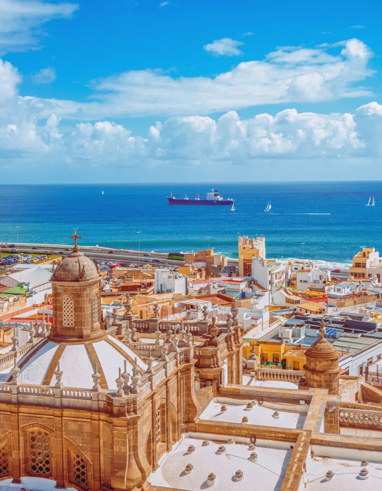
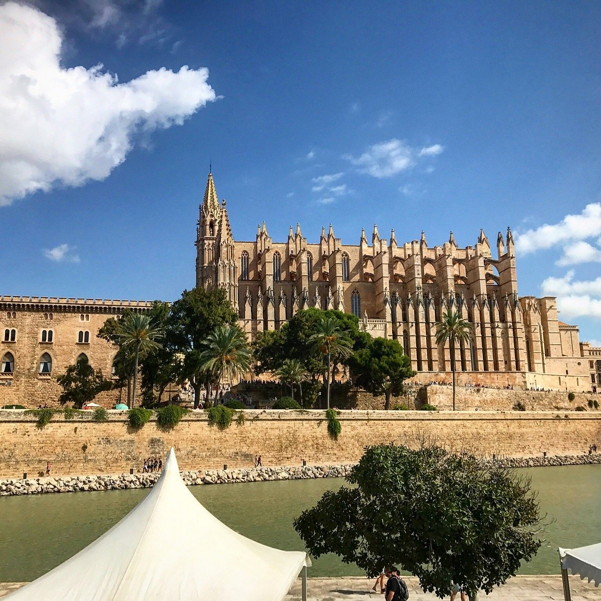
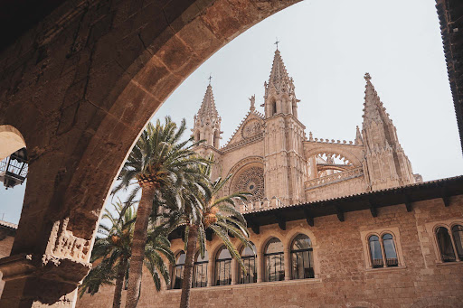
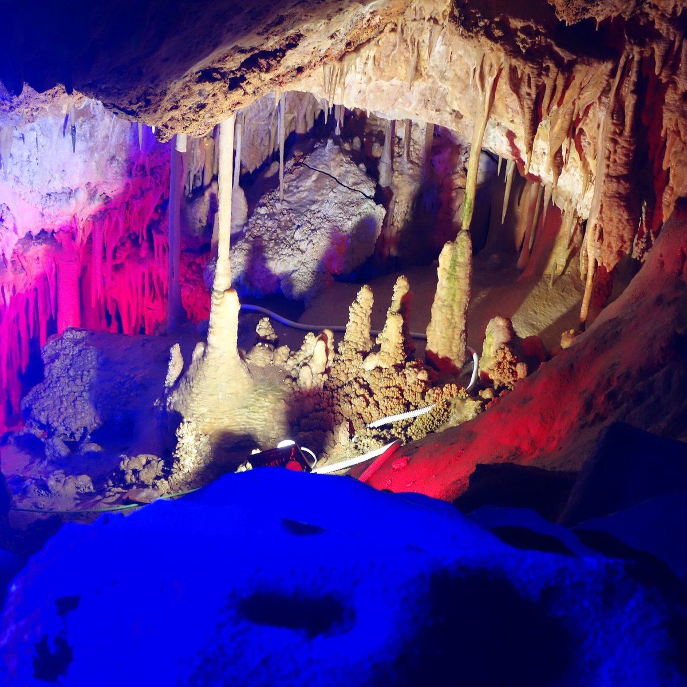

Las Palmas de Grande Canarie1 (en espagnol, Las Palmas de Gran Canaria), plus couramment Las Palmas, est une commune de la communauté autonome des Îles Canaries située dans le nord-est de l'île de Grande Canarie dans la province de Las Palmas. Las Palmas est la capitale de l'île et est la co-capitale de la communauté autonome des îles Canaries avec Santa Cruz de Tenerife, le transfert des pouvoirs s'opérant tous les quatre ans.
Las Palmas de Grande Canarie est la plus grande ville des îles Canaries et l'une des 10 zones métropolitaines les plus peuplées d'Espagne2. Elle s'étend sur près de 10 km entre le ravin de Guiniguada au sud et la presqu'île d'Isleta au nord. De plus, la ville possède plusieurs plages, parmi lesquelles la plage de Las Canteras se distingue, considérée parmi les meilleures plages urbaines du monde3
La ville, la plus cosmopolite des îles Canaries, possède plusieurs plages, parmi lesquelles la plage de Las Canteras, considérée comme l'une des meilleures plages urbaines du monde4,5.
La cité, également connue pour son célèbre carnaval (en) qui se prolonge pendant des semaines au mois de février, est le centre administratif et économique de l'île.

Alors que l'île est jalonnée de falaises au nord et de longues plages au sud, Las Palmas de Gran Canaria est une ville offrant le soleil, la plage et un riche patrimoine historique.
Cette ville métisse jouit de températures douces toute l'année. Le mélange entre la culture aborigène des Guanches, le passé colonial et le fait d'être à 90 milles des côtes africaines explique que l'île soit imprégnée des cultures africaine, européenne et américaine.

Cathédrale de Palma de Majorque
Située au cœur de la ville de Palma, elle domine le très proche rivage de la Méditerranée au-dessus des fortifications médiévales de la cité. Elle forme avec le palais voisin de l'Almudaina, le symbole visuel de Palma, visible de toute la baie.

Palais royal de l'Almudaina
Avec un emplacement spectaculaire en bord de mer et à côté de la Cathédrale de Palma, le palais royal de l'Almudaina raconte l'histoire de Majorque, offrant un délicieux mélange des différentes cultures qui sont venues sur l'île pour y laisser leur empreinte.

Grotte de Genova
Situées à seulement quelques minutes de Palma, les grottes de Génova furent découvertes en 1906. Ces grottes naturelles servaient d'habitat et de refuge à la préhistoire. Découvrez leur splendeur naturelle, sculptée par l'eau au fil des siècles.
Une petite video de cet endroit magnifique
"Nous sommes une agence de voyages et pour nous notre plus beau voyage c est vous"